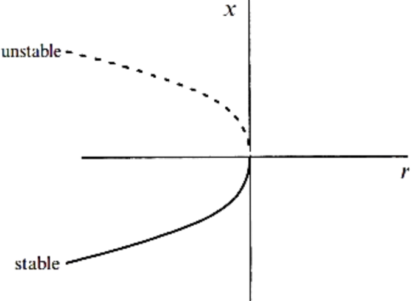
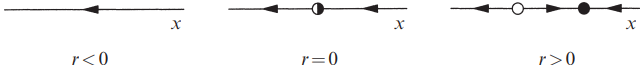

The curve shown is \( r = -x^2, \quad \text{i.e.,} \quad \dot{x} = 0, \) which gives the fixed points for different \( r \). \( r \) plays the role of an independent variable, and so should be plotted horizontally. This picture is called the bifurcation diagram for the saddle-node bifurcation
For example, the vector field \( \dot{x} = r - x^2 \) has no fixed points for \( r < 0 \), but then one materializes when \( r = 0 \) and splits into two when \( r > 0 \). This example also explains why we use the word “bifurcation”: it means “splitting into two branches”
Give a linear stability analysis of the fixed points:the fixed points for \(\dot{x} = f(x) = r - x^2\) are given by \(x^* = \pm \sqrt{r}\). There are two fixed points for \(r > 0\), and none for \(r < 0\). To determine linear stability, compute \(f'(x^*) = -2x^*\). Thus \(x^* = +\sqrt{r}\) is stable, since \(f'(x^*) < 0\). Similarly, \(x^* = -\sqrt{r}\) is unstable. At the bifurcation point \(r = 0\), \(f'(x^*) = 0\); the linearization vanishes when the fixed points coalesce
1Strogatz, S.H. (2015). Nonlinear Dynamics and Chaos: With Applications to Physics, Biology, Chemistry, and Engineering (2nd ed.). CRC Press.